Season 42 (2007-2008)
-
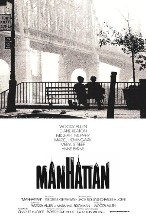
September 9, 2007Directed by Woody Allen; Starring Woody Allen, Diane Keaton, Meryl Streep, Mariel Hemingway
Manhattan
USA, 1979, 96 min, B&W, R
Woody Allen finished his first decade of filmmaking with one of his most deliberately artistic films, a love song to his home, Manhattan. Although the acting and writing is some of the sharpest of Allen's career, what is truly memorable about Manhattan is its romantic view of New York City. Allen and his longtime cinematographer Gordon Willis decided to shoot the film in black and white and in a wide-screen format to aesthetically accentuate iconic images of the city. Allen added a soundtrack consisting of classic George Gershwin songs that add grandeur and sweep to the film. Roger Ebert called Manhattan "one of the best-photographed movies ever made," and it is a movie that begs to be seen on a big screen.
Read Roger Ebert's review of Manhattan at Great Movies. -
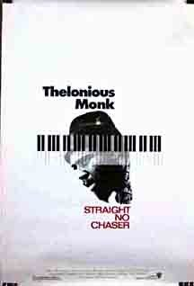
October 14, 2007Directed by Charlotte Zwerin; Starring Jimmy Cleveland, Harry Colomby, John Coltrane, Ray Copeland
Thelonious Monk: Straight No Chaser
USA, 1988, 90 min, Color, PG-13
Thelonious Monk: Straight, No Chaser, produced by jazz aficionado Clint Eastwood, is an intelligent portrait of Thelonious Monk centered on lost footage that was rediscovered in the 1980s. The footage was shot by cinematographers Michael and Christian Blackwood during six months in 1967-68, and reveals a lot about Monk's personality, including his dramatic mood swings, eccentric behavior, and keen sense of humor. The Blackwoods followed Monk "behind the scenes" in the studio and on tour in Europe. The generous video catalogue of Monk songs is alone worth watching, but the film is rounded out with interviews with Monk's friends, family, and fellow musicians, giving us a glimpse at the private life of a legendary jazz artist.
-
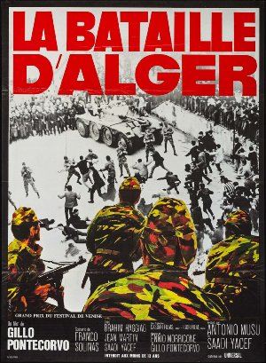
November 11, 2007Directed by Gillo Pontecorvo; Starring Jean Martin, Yacef Saadi, Brahim Hadjadj, Tommaso Neri
The Battle of Algiers (La Battaglia di Algeri)
Algeria/Italy, 1966, 121 min, B&W, Not Rated, French w/subtitles
Exploring the Algerian people's struggle to liberate themselves from France between 1954 and 1962, many themes of this film have relevance to the current day. The Boston Globe said of The Battle of Algiers, "The chafing, mutually uncomprehending collision of Western occupiers and Muslim-occupied has never been captured with such dispassionate, thrilling clarity." Director Gillo Pontecorvo creates a stunning illusion of realism by combining actual newsreel footage with staged sequences featuring amateur and professional actors playing characters based on real people. The film's depiction of violence, political torture, insurgency and counter-insurgency was revolutionary at the time, and just as startling today as 40 years ago.
Read Roger Ebert's review of The Battle of Algiers at Great Movies. -
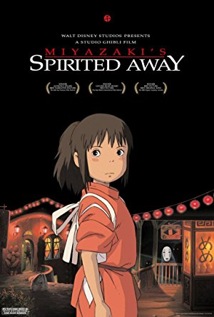
December 9, 2007Directed by Hayao Miyazaki, Kirk Wise; Voices of Daveigh Chase, Lauren Holly, Michael Chiklis, Jason Marsden, Suzanne Pleshette
Spirited Away (Sen to Chihiro no kamikakushi)
Japan, 2001, 125 min, Animated, PG, English (dubbed)
Spirited Away is the animated tale of Chihiro, a young girl who embarks on a strange adventure while moving with her parents to a new home in an unfamiliar town. Reminiscent of Lewis Carroll's Alice in Wonderland, Spirited Away's stunningly beautiful handcrafted animation reveals a cast of fascinating characters and surreal settings that follow a bizarre yet engaging logic. In 2002, Spirited Away overtook Princess Mononoke, also directed by Hayao Miyazaki, to become the most successful film in Japanese cinema history.
Read Roger Ebert's review of Spirited Away at Great Movies. -
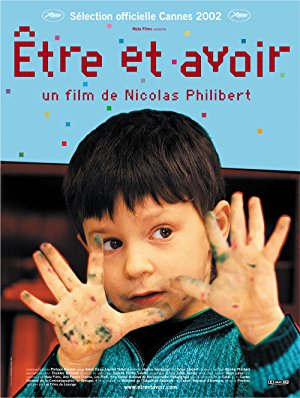
January 13, 2008Directed by Nicolas Philibert; Starring Georges Lopez, Alizé, Axel Thouvenin, Guillaume
To Be and To Have (Être et avoir)
France, 2002, 104 min, Color, Not Rated, French w/subtitles
To Be and To Have is a beautiful and inspirational film concerning a dedicated and gifted teacher whose world is a one-room schoolhouse in the French countryside. It charts the teacher, George Lopez, and his class over the course of one academic year, and takes a warm and serene look at the primary education process at its best. Director Nicolas Philibert's camera is a casual observer, choosing to capture, in an unfettered manner, Lopez's special way with the students – whether teaching math or mediating shoving matches. To Be and To Have is ultimately a stirring and bittersweet portrait of Lopez, a 20-year teaching veteran on the verge of retirement. Critic Andrew Sarris said that the film "contains some of the most stirring footage I have ever seen on the act and art of teaching children."
-
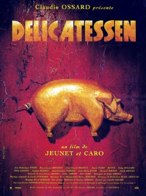
February 10, 2008Directed by Marc Caro, Jean-Pierre Jeunet; Starring Pascal Benezech, Dominique Pinon, Marie-Laure Dougnac, Jean-Claude Dreyfus
Delicatessen
France, 1991, 99 min, Color, R, French w/subtitles
Both directors Caro and Jeunet were successful TV commercial and music video directors before their feature-film debut of Delicatessen. Their flair for visual communication and humor shows through in this bizarre, dark comedy. The story is of a post-apocalyptic society where food is so valuable it is used as currency, and people sometimes turn to cannibalism. Louison, a sweet-natured clown, moves into a run-down apartment building with a deli on the ground floor, and falls in love with the butcher's daughter Julie. When it turns out that Julie's father is butchering human beings and selling the meat to the tenants of the building, Julie must decide if she will remain loyal to her father's business or save Louison from becoming the next victim. Director Jeunet continued his very visual style in other somewhat more conventional movies, most notably 2001's Amèlie, but Delicatessen was his most influential, spawning a wave of directorial imitators (see the visual styles of Like Water for Chocolate or Death Becomes Her).
-
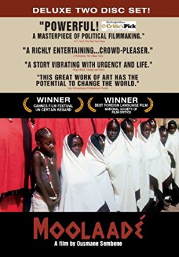
March 9, 2008Directed by Ousmane Sembene; Starring Fatoumata Coulibaly, Maimouna Hélène Diarra, Salimata Traoré, Dominique Zeïda
Moolaadé
Senegal, 2004, 124 min, Color, Not Rated, Bambara/French w/subtitles
Washington Post film critic Desson Thomas wrote, "In Moolaadé, six African girls refuse to undergo ritual clitoridectomy and unwittingly cause a revolution in their village. In Senegalese director Ousmane Sembene's hands, what could have been merely exotic spectacle becomes something astonishing, timely and deeply moving." Sembene is thought of as the father of African cinema, and Moolaadé is his crown jewel. He filmed it at the age of 81, and he imbued it with the strong feminist consciousness that marks his other works, most notably Faat Kine in 2001. While the subject matter of Moolaadémay repel squeamish viewers, skipping it would be a missed opportunity to experience the embracing, affirming, world-changing potential of humanist cinema at its finest.
Read Roger Ebert's review of Moolaadé at Great Movies. -
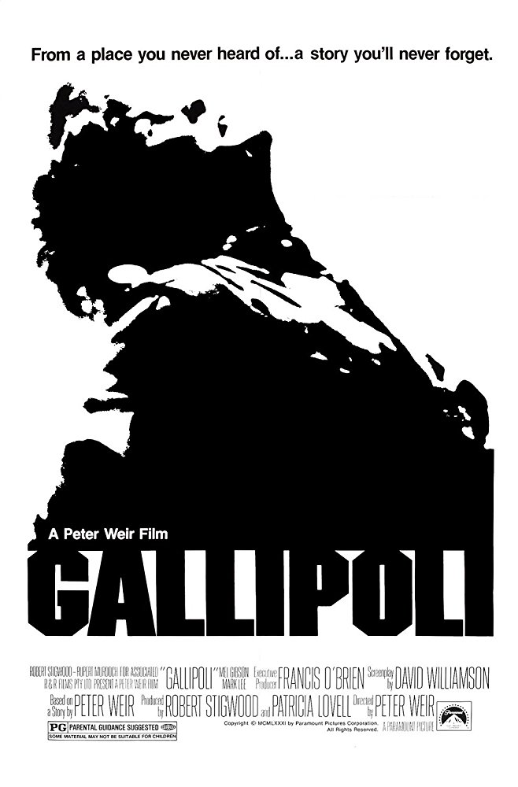
April 13, 2008
Gallipoli
Australia, 1981, 110 min, Color, PGDirected by Peter Weir; Starring Mark Lee, Bill Kerr, Harold Hopkins, Mel Gibson
The films of Peter Weir are often studies of male bonding, men in danger, and anxiety over the violence that those men commit against one another. Witness, Master and Commander, The Year of Living Dangerously, and, especially, Gallipoli, illustrates these points. Gallipoli relates the events surrounding the ill-fated World War I battle of the same name, in which Australian and New Zealand troops set out to capture Istanbul. We follow the characters of Archy and Frank before the war and during the battle that becomes a disaster for the Allies. Gallipoli's depiction of the horror, senselessness, and confusion of war (not to mention its movie poster) makes one believe that the film was very influential to other war movies, such as Oliver Stone's Platoon.
- 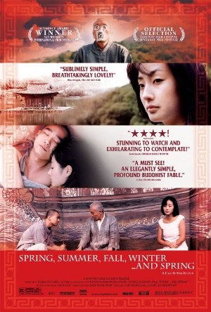
May 11, 2008Directed by Ki-duk Kim; Starring Yeong-su Oh, Ki-duk Kim, Young-min Kim, Jae-kyeong Seo
Spring, Summer, Fall, Winter ... and Spring (Bom yeoreum gaeul gyeoul geurigo bom)
South Korea, 2003, 103 min, Color, R, Korean w/subtitles
This exquisitely simple movie was filmed at a single location – a remote and picturesque mountain lake in a South Korea wilderness preserve. In five sharp, concise vignettes that correspond to the seasons of the title, director Kim Ki-duk manages to isolate something essential about human nature. The narrative of the film concentrates on the relationship between a Buddhist monk and his young protégé, characters whose names are never spoken. Critic A. O. Scott said, "The subject of Spring, Summer, Fall, Winter ... and Spring is spiritual discipline, which the older monk distills into a set of lessons that are, like the film, self-evident and enigmatic. They also reflect aspects of Buddhism not always sufficiently appreciated in the West, often witty and occasionally harsh." The beautiful cinematography and attention to visual detail (such as using a different animal as a motif for each segment) complement the patient and gentle pace of the screenplay, creating a very original yet universal story of human nature.
Read Roger Ebert's review of Spring, Summer, Fall, Winter ... and Spring at Great Movies.- 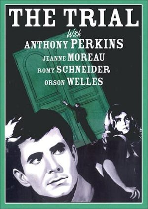
June 8, 2008Directed by Orson Welles; Starring Anthony Perkins, Jeanne Moreau, Romy Schneider, Elsa Martinelli, Orson Welles, Akim Tamiroff
The Trial (Le Proces)
France, 1962, 119 min, B&W, Not Rated
Based on the Franz Kafka novel of the same name, The Trial follows the story of Joseph K., who wakes one morning and finds the police in his room. He is arrested and put on trial, but no one will tell him what he is accused of. Director Orson Welles provides the opening voice-over for the film, intoning, "It has been said that the logic of this story is the logic of a dream, of a nightmare…" It is the nightmare quality that Welles is emphasizing. Filmed in shadowy black and white, with angled close-ups, film noir-like compositions, cluttered and surreal interiors, and a plot that involves sinister authority figures and instruments of torture, The Trial is undeniably vivid and scary.
- 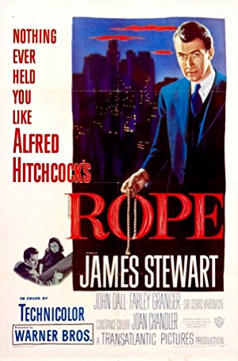
July 13, 2008Directed by Alfred Hitchcock; Starring James Stewart, John Dall, Farley Granger, Cedric Hardwicke, Joan Chandler, Constance Collier, Douglas Dick
Rope
USA, 1948, 80 min, Color, PG
Rope marked a number of landmarks for Alfred Hitchcock: it was his first film in color, it featured two obviously gay lead characters, and of all his films it was his personal favorite. But these characteristics only scratch the surface of a unique Hitchcock masterpiece. Loosely based on a true story, two rich young men murder a colleague for the sake of the intellectual challenge of committing the perfect crime. To add to the amusement, they hide the body in a trunk that will serve as the dinner table for a party honoring the deceased. The film uses very long takes with no close-ups that both draw the viewer in to the dinner party and draw out the suspense. Rope was an experiment to Hitchcock, who was trying to find the cinematic equivalent of a play. That he could turn out brilliance while he considered himself to be merely playing around is a testament to Hitchcock's genius.
- 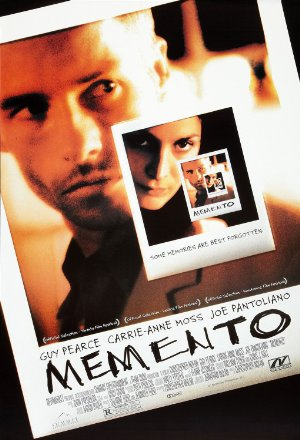
August 10, 2008Directed by Christopher Nolan; Starring Guy Pearce, Carrie-Anne Moss, Joe Pantoliano, Jorja Fox
Memento
USA, 2000, 113 min, Color, R
The plot is straightforward enough: Leonard, an ex-insurance investigator, is trying to find the man who killed his wife. Complicating matters is the fact that Leonard suffers from short-term memory loss due to a head trauma. He knows everything up to the point of his brain injury, but can only remember everything after his injury for a few moments. Further complicating the story is the tour-de-force narrative style director Christopher Nolan brings to the movie: The story is told backwards. We see segments of the film in reverse chronological order, so that, like Leonard, we don't know the events that have preceded what is currently happening, and must figure things out on the spot. This unique movie will have you guessing until the surprising ending that is, in fact, the beginning.
- 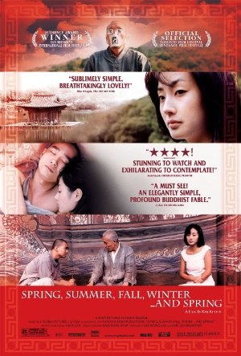